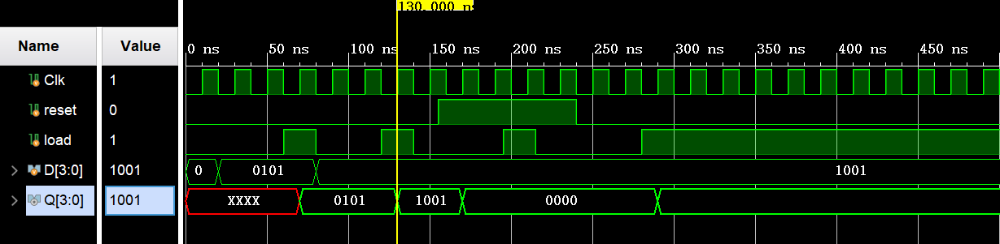
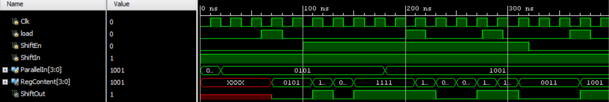
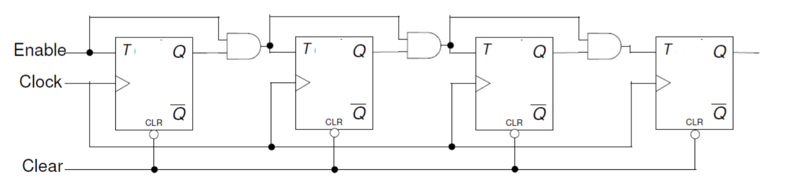
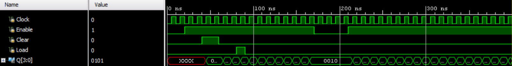
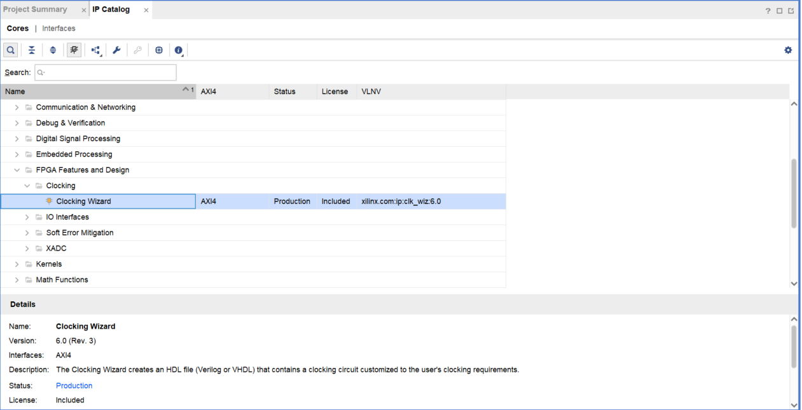
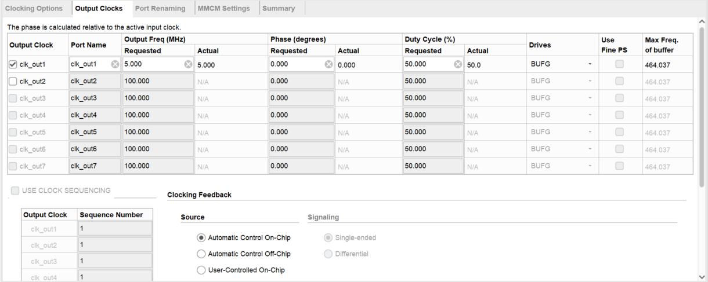
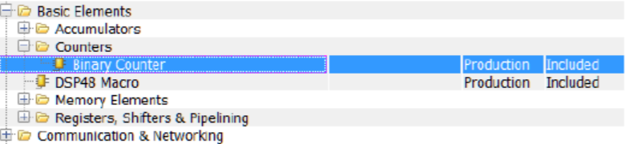

复杂时序逻辑电路
1. 时序逻辑电路的基本结构和分类
1-1. 基本结构
时序逻辑电路由组合电路和存储电路两部分组成，通过反馈回路将两部分连成一个整体。时序逻辑电路的一般结构如下图所示。

图中，X1，…，Xn为时序逻辑电路的输入信号；Z1，…，Zm为时序逻辑电路的输出信号；y1，…，ys为时序逻辑电路的状态信号，又称为组合电路的状态变量；Y1，…，Yr为时序逻辑电路中的激励信号，它决定电路下一时刻的状态；CP 为时钟脉冲信号，它是同步时序逻辑电路中的定时信号。
若记输入信号为 \(\vec{X}\)，输出信号为 \(\vec{Z}\)，激励信号为 \(\vec{Y}\)，状态信号为 \(\vec{y}\)，于是上述的 4 个向量之间的转换关系可以由下面的三个公式表示：
其中，式 1-1.1 表达了输出信号与输入信号和状态信号之间的关系，被称为输出方程组；式 1-1.2 表示了激励信号与状态信号和输入信号之间的关系，称为时序电路的激励方程；式 1-1.3 表示了电路从现态到次态的转换过程，被称作状态转换方程。
在这里大家可以看到，上面的时序电路又是状态（\(\vec{y}\)）依赖的，我们常把这样的电路叫做状态机。下一部分有对于状态机的详细描述，敬请期待:smile:。
1-2. 时序逻辑电路的分类
1-2-1. 异步时序电路与同步时序电路
关于这个问题在上一章有过讨论。这里还要再啰嗦两句。
可以这样理解：如果时序电路中个存储单元的状态更新不是同时发生的，则这种电路称为异步时序电路；如果个存储电路状态是在同一信号的同一边沿更新的，就可以称作同步时序电路。
导致这种更新不同步的原因可能是：电路的触发器的时钟输入端没有连接在相同的时钟脉冲上，或者这个电路里根本就没有时钟脉冲。
1-2-2. 米利型和摩尔型电路
关于这个问题的详细描述将在下一章出现。
2. 几个典型的时序逻辑电路
多个触发器在同一时钟下组合在一起，来保存相关信息的电路称为寄存器。就像触发器一样，寄存器也可以有其它的控制信号。你将了解具有附加控制信号的寄存器的行为。
计数器是广泛使用的时序电路。在本次实验中，你将用几种方法设计寄存器和计数器。请参考 Vivado 教程上关于如何使用 Vivado 创建工程和验证电路。
2-1. 可同步重置、载入信号的寄存器
在计算机系统中，相关信息常常在同时被存储。寄存器（register）以这样的方式存储信息比特，即系统可以在同一时间写入或读出所有的比特。寄存器的例子包含数据、地址、控制和状态。简单的寄存器数据的输入引脚和输出引脚分开，但它们用相同的时钟源。一个简单寄存器的设计如下。
module Register (input [3:0] D, input Clk, output reg [3:0] Q);
always @(posedge Clk)
Q <= D;
endmodule
这个简单的寄存器会在每个时钟周期工作，保存需要的信息。然而，在有的情况下，需要只有在特定条件发生时，寄存器内容才被更新。比如，在计算机系统中的状态寄存器只在特定的指令执行时才更新。在这种情况下，寄存器的时钟需要用一个控制信号控制。这样的寄存器需要包含一个时钟使能引脚。下面是这种寄存器的设计。
module Register_with_synch_load_behavior(input [3:0] D, input Clk,
input load, output reg [3:0] Q);
always @(posedge Clk)
if (load)
Q <= D;
endmodule
另一个希望寄存器包含的特性是，当特定条件发生时，寄存器会重置存储的内容。下面是一个包含同步的（synchronous）重置和载入信号（重置的优先级高于载入）的简单寄存器的设计。
module Register_with_synch_reset_load(input [3:0] D, input Clk,input reset,
input load, output reg [3:0] Q);
always @(posedge Clk)
if (reset) begin
Q <= 4'b0;
end
else if (load) begin
Q <= D;
end
endmodule
实验目的
用上面的例子，设计一个 4-bit 寄存器，包含同步的重置和载入信号。编写一个测试用例并对你的设计仿真。对 Clk, D input, reset, load，和 output Q 赋值。在硬件中验证你的设计。
参考步骤
-
打开 Vivado，创建一个工程命名为 lab6_1_1。
-
创建 Verilog module 并添加包含同步重置和载入信号的 4-bit 寄存器。使用上面例子中提供的代码。
-
编写一个测试用例，仿真 500ns，并分析输出。
若使用供参考的 Testbench，则最终仿真得到的波形应该如下：

-
添加开发板相对应的 XDC 文件，编辑 XDC 文件，加入相关的引脚，将 Clk 赋给 SW15，D input 给 SW3-SW0，reset 给 SW4, load 给 SW5，Q 给 LED3- LED0。
-
把下面这行代码加入 XDC 文件，使 SW15 允许被当作时钟使用。
set_property CLOCK_DEDICATED_ROUTE FALSE [get_nets { clk }]; -
综合你的设计。
-
实现你的设计，查看 Project Summary 和 Utilization table，注意到 1 个 BUFG 和 11 个 IO 被使用了。
-
生成比特流文件，将其下载到 Nexys4 DDR 开发板，并验证功能。
参考代码
寄存器的实现代码参考例子即可，下面是 Testbench 的参考代码：
module Register1_tb();
reg Clk, reset, load;
reg [3:0] D;
wire [3:0] Q;
Register_with_synch_reset_load TB(.Clk(Clk),.load(load),.reset(reset),.D(D),.Q(Q));
initial begin
Clk = 0;
forever begin
#10 Clk = 1;
#10 Clk = 0;
end
end
initial begin
load = 0;
#60 load = 1;
#20 load = 0;
#40 load = 1;
#20 load = 0;
#55 load = 1;
#20 load = 0;
#65 load = 1;
end
initial begin
reset = 0;
#155 reset = 1;
#85 reset = 0;
end
initial begin
D = 4'b0000;
#20 D = 4'b0101;
#60 D = 4'b1001;
end
endmodule
2-2. 可同步重置、同步置位、载入信号的寄存器
在一些仿真中，有必要把寄存器设置到一个预设值。对于这种情况，需要使用另一个控制信号，称为设置 set。一般情况下，在这种寄存器中，重置信号会比设置信号拥有更高优先级，而设置信号比载入信号拥有更高优先级。
实验目的
设计一个 4-bit 包含同步重置，设置和载入信号的寄存器。分配好 Clk, D input, reset, set,load 和 output Q。在硬件中验证功能。
参考步骤
-
打开 Vivado，创建一个工程命名为 lab6_1_2.
-
创建 Verilog module 并添加包含同步重置，设置和载入信号的 4-bit 寄存器。
-
编写一个测试用例，仿真 500ns，并分析输出。
若使用供参考的 Testbench，则最终仿真得到的波形应该如下：

-
添加开发板相对应的 XDC 文件，编辑 XDC 文件，加入相关的引脚。注意：你可能需要为你选择的拨码开关的 Clk pin 加入 CLOCK_DEDITCATED_ROUTE 特性（property）。
-
综合你的设计。
-
实现你的设计。查看 Project Summary 并注意使用资源。理解输出的结果。
-
生成比特流文件，将其下载到 Nexys4 DDR 开发板，并验证功能。
参考代码
module Register_with_synch_reset_load_behavior(input [3:0] D, input Clk,input set,
input reset, input load, output reg [3:0] Q);
always @(posedge Clk)
if (reset) begin
Q <= 4'b0;
end
else if (set) begin
Q <= 4'b1111;
end
else if (load) begin
Q <= D;
end
endmodule
module Register1_tb();
reg Clk, reset, set, load;
reg [3:0] D;
wire [3:0] Q;
Register_with_synch_reset_load_behavior TB(.Clk(Clk),.set(set),.load(load),.reset(reset),.D(D),.Q(Q));
initial begin
Clk = 0;
forever begin
#10 Clk = 1;
#10 Clk = 0;
end
end
initial begin
load = 0;
#60 load = 1;
#20 load = 0;
#40 load = 1;
#20 load = 0;
#55 load = 1;
#20 load = 0;
#65 load = 1;
end
initial begin
reset = 0;
#155 reset = 1;
#85 reset = 0;
end
initial begin
set = 0;
#220 set = 1;
#50 set = 0;
end
initial begin
D = 4'b0000;
#20 D = 4'b0101;
#60 D = 4'b1001;
end
endmodule
2-3. 4-bit 并行输入并行输出移位寄存器
还有一种寄存器称为移位寄存器。移位寄存器是当控制信号生效时，存储的二进制数据会左移或右移的寄存器。移位寄存器可以被进一步分类为并行载入串行输出，串行载入并行输出和串行载入串行输出。它们可能有也可能没有重置信号。
在 Xilinx FPGA，LUT 可以被用作串行移位寄存器；如果代码写对的话，1 个 LUT 就可以用作 1bit 输入 1bit 输出的 SRL32，因而可以提供非常经济的设计（而不是串联 32 个触发器）。它可以有也可以没有使能信号。当使能信号生效时，内部存储的数据会移位 1bit，1bit 新的数据也会移入。
下面是一个简单的没有使能信号的 1bit 串行移入移出寄存器的设计。在这个设计中移入的 bit 需要经过 32 个时钟周期移出。这个设计可以用来实现一个延迟线。
module simple_one_bit_serial_shift_register_behavior(input Clk, input
ShiftIn, output ShiftOut);
reg [31:0] shift_reg;
always @(posedge Clk)
shift_reg <= {shift_reg[30:0], ShiftIn};
assign ShiftOut = shift_reg[31];
endmodule
如果我们要实现一个少于 32 个时钟周期的延迟线，可以修改上面这个设计。下面是一个 3 时钟周期的延迟线。
module delay_line3_behavior(input Clk, input ShiftIn, output ShiftOut);
reg [2:0] shift_reg;
always @(posedge Clk)
shift_reg <= {shift_reg[1:0], ShiftIn};
assign ShiftOut = shift_reg[2];
endmodule
实验目的
设计一个 4-bit 并行输入的向左移位寄存器。使用下图的信号刺激，编写一个测试用例并对你的设计仿真。 分配 Clk, ParallelIn, load, ShiftEn, ShiftIn, RegContent 和 ShiftOut.。在硬件上验证功能。
参考步骤
-
打开 Vivado，创建一个工程命名为 lab6_1_4.
-
创建 Verilog module，使用上面的代码，添加 4-bit 并行输入的向左移位寄存器。
-
独立编写一个测试用例，仿真 400ns。输入信号的波形参考如下：

-
添加开发板相对应的 XDC 文件，编辑 XDC 文件，加入相关的引脚。注意：你可能需要为你选择的拨码开关的 Clk pin 加入 CLOCK_DEDITCATED_ROUTE 特性（property）。
-
综合你的设计。
-
实现你的设计。
查看 Project Summary 并注意使用资源。理解输出的结果。
-
生成比特流文件，将其下载到 Nexys4 DDR 开发板，并验证功能。
参考代码
module Parallelin_serialout_load_enable(input Clk, input ShiftIn,input [3:0] ParallelIn,
input load, input ShiftEn, output ShiftOut,
output [3:0] RegContent);
reg [3:0] shift_reg;
always @(posedge Clk)
if(load)
shift_reg <= ParallelIn;
else if (ShiftEn)
shift_reg <= {shift_reg[2:0], ShiftIn};
assign ShiftOut = shift_reg[3];
assign RegContent = shift_reg;
endmodule
2-4. 8-bit 计数器
计数器可以是异步的也可以是同步的。异步计数器只使用事件信号来对事件计数。而同步计数器，使用共有的时钟信号，因而当多个触发器必须改变状态时，状态的改变同时发生。二进制计数器是一种简单的计数器，当使能信号生效时会计数，当重置信号生效时会重置。当然，重置信号比使能信号的优先级高。
下面的电路图展示了这样的计数器。需要注意的是，清除信号是异步低电平生效的，而使能信号是同步高电平生效的。

实验目的
设计一个 8-bit 计数器，将上面的结构扩展至 8-bits。你的设计应该是分层级的，即先设计出 T 触发器，再通过建模实现 8-bit 计数器。T 触发器的实现方案也是多种的，你可以直接行为级建模实现，也可以利用之前实现过的 D 触发器实现，因为 T 触发器可以用 D 触发器构造，如下图。
编写一个测试用例并验证设计。分配 Clock input, Clear_n, Enable 和 Q。实现设计并在硬件上验证功能。
参考步骤
-
打开 Vivado，创建一个工程命名为 lab6_2_1.
-
创建并添加 Verilog module 以提供所需的功能。
-
编写一个测试用例，并验证设计。
若使用参考测试用例，则得到的波形应该如下：
 )
) -
添加开发板相对应的 XDC 文件，编辑 XDC 文件，加入相关的引脚。注意：你可能需要为你选择的拨码开关的 Clk pin 加入 CLOCK_DEDITCATED_ROUTE 特性（property）。
-
综合你的设计并在 Synthesized Design 查看原理图（schematic）。指出用了什么资源，用了多少。
-
实现你的设计。
-
生成比特流文件，将其下载到 Basys3 或 Nexys4 DDR 开发板，并验证功能。
参考代码
module T_ff_clear_behavior(
input T,
input Clk,
input Clr,
output reg Q
);
always@(posedge Clk or negedge Clr)begin
if(~Clr)begin
Q <= 0;
end
else if(T) begin
Q <= ~Q;
end
end
endmodule
module counter_8_bit(
input Clk,
input Clr,
input Enable,
output [7:0] Q
);
T_ff_clear_behavior A1(.Clk(Clk),.Clr(Clr),.T(Enable),.Q(Q[0]));
T_ff_clear_behavior A2(.Clk(Clk),.Clr(Clr),.T(Enable & Q[0]),.Q(Q[1]));
T_ff_clear_behavior A3(.Clk(Clk),.Clr(Clr),.T(Enable & Q[0] & Q[1]),.Q(Q[2]));
T_ff_clear_behavior A4(.Clk(Clk),.Clr(Clr),.T(Enable & Q[0] & Q[1] & Q[2]),.Q(Q[3]));
T_ff_clear_behavior A5(.Clk(Clk),.Clr(Clr),.T(Enable & Q[0] & Q[1] & Q[2] & Q[3]),.Q(Q[4]));
T_ff_clear_behavior A6(.Clk(Clk),.Clr(Clr),.T(Enable & Q[0] & Q[1] & Q[2] & Q[3] & Q[4]),.Q(Q[5]));
T_ff_clear_behavior A7(.Clk(Clk),.Clr(Clr),.T(Enable & Q[0] & Q[1] & Q[2] & Q[3] & Q[4] & Q[5]),.Q(Q[6]));
T_ff_clear_behavior A8(.Clk(Clk),.Clr(Clr),.T(Enable & Q[0] & Q[1] & Q[2] & Q[3] & Q[4] & Q[5] & Q[6]),.Q(Q[7]));
endmodule
module counter_8_bit_tb();
reg Clk,Clr,Enable;
wire [7:0] Q;
counter_8_bit TB(.Clk(Clk),.Clr(Clr),.Enable(Enable),.Q(Q));
initial begin
Clk = 0;
forever begin
#10 Clk = 1;
#10 Clk = 0;
end
end
initial begin
Clr = 1;
#5 Clr = 0;
#5 Clr = 1;
end
initial begin
Enable = 0;
#20 Enable = 1;
#100 Enable = 0;
#150 Enable = 1;
end
endmodule
2-4. 4-bit 递减计数器
有些情况下，你可能要求计数器从非 0 的地方开始计数增或计数减，要求计数器到达指定值时停下。这是一个 4-bit 计数器的例子，它从 10 开始计数递减到 0。当计数值到 0 时，它会重新初始化到 10。在任何时候，如果使能信号是低电平，计数器会暂停计数，直到使能信号恢复。假定在计数开始前，载入信号就生效来载入预设值。
reg [3:0] count;
wire cnt_done;
assign cnt_done = ~| count;
assign Q = count;
always @(posedge Clock)
if (Clear)
count <= 0;
else if (Enable)
if (Load | cnt_done)
count <= 4'b1010; // decimal 10
else
count <= count - 1;
实验目的
参考上面的代码，设计一个 4-bit 递减计数器，包含同步载入、使能和清除。编写测试用例并验证功能。分配 Clock input, Clear,Enable, Load 和 Q。实现设计并在硬件上验证功能。
参考步骤
- 打开 Vivado，创建一个工程命名为 lab6_2_3.
- 创建并添加 Verilog module 以提供所需的功能。
-
编写一个测试用例，并验证设计。测试用例输入信号的编写参考下面的波形：

-
添加开发板相对应的 XDC 文件，编辑 XDC 文件，加入相关的引脚。注意：你可能需要为你选择的拨码开关的 Clk pin 加入 CLOCK_DEDITCATED_ROUTE 特性（property）。
- 综合你的设计并在 Synthesized Design 查看原理图（schematic）。
- 实现你的设计。
- 生成比特流文件，将其下载到 Nexys4 DDR 开发板，并验证功能。
参考代码
module counter_decline(
input Clock,
input Clear,
input Enable,
input Load,
output [3:0] Q
);
reg [3:0] count;
wire cnt_done;
assign cnt_done = ~ | count; //count是否递减到0
assign Q = count;
always @(posedge Clock)
if (Clear)
count <= 0;
else if (Enable)
if (Load | cnt_done)
count <= 4'b1010; // decimal 10
else
count <= count - 1;
endmodule
3. FPGA 工具中的常用电路
现在的 Xilinx FPGA 包含了比基本的 LUT,CLB,IOB 和布线更多的资源。与胶合逻辑发明时相比，现在 FPGA 被用来实现更复杂的数字电路。一些复杂的架构资源，例如时钟，必须利用配置和实例化，而不是自己实现。FPGA 工具也提供经常使用的复杂电路，例如 ReedSolomon 译码器，使得开发者不需要“重新设计轮子”。本次实验介绍架构向导，和可以通过 IP 目录获得的 IP 生成工具。
3-1. 时钟约束向导
通过对 FPGA 提供的工具的正确配置和实例化，而不是亲自实现，可以有效的使用专业和高级的架构。所使用的 FPGA 系列不同，所提供的架构的数量和种类也不同。在 Artix-7 系列中，提供了时钟、SelectIO，软错误缓解和 XADC 资源。可以在 IP Catalog 工具的 FPGA Features andDesign 文件夹下访问这些资源。
在 Nexys4 DDR 板上，可以使用 100 MHz 时钟源，它连接到 Nexys4 DDR 的 E3 引脚。该时钟源可用于产生多个不同频率和相移的时钟。这是通过使用称为 Artix-7 系列 FPGA 的数字时钟管理器（DCM）和锁相环（PLL）的架构资源来完成的。可以通过双击 IP Catalog 的 FPGA Feature and Design 文件夹的 Clocking 子文件夹下的 Clocking Wizard 条目来调用时钟源生成器。

该向导可以轻松的为你定制的时钟电路创建源代码封装器。该向导将指导你为时钟原语设置适当的属性，并允许你更改任何向导计算的参数。除了提供用于实现所需时钟电路的 HDL 包装器之外，时钟向导还提供由 Xilinx 时序工具为电路生成的时序参数汇总。该向导的主要功能包括：
- 每个时钟网络最多可接受两个输入时钟和七个输出时钟；
- 自动为所选设备选择正确的时钟原语；
- 根据用户选择的时钟功能自动配置时钟原语；
- 自动实现支持相移和占空比要求的整体配置；
- 可选择缓冲时钟信号。
时钟生成部件核心的功能如下图：
假设我们想要生成一个与 100 MHz 输入时钟同相的 5MHz 时钟。请按照以下步骤实现：
双击 Clocking Wizard 条目，向导打开后，你会看到有五个选项。

- 第一项标题为 Clocking Options。这里有与输入时钟，时钟参数，输入频率和范围相关的参数。由于实际的时钟频率就是 100MHz，所以我们保持默认值就行。
-
第二项标题为 Output Clocks。可以设置输出时钟和所需频率相关的参数。设置输出频率为 1.000MHz。注意：如果频率显示为红色的表明存在错误。由于此时频率显示为红色，存在错误。将鼠标移到该位置可以看到弹出提示“此设备的实际频率范围为 4.678MHz 至 800MHz”。现将其改为 5.000MHz。在输出时钟中取消勾选 RESET 选项，然后我们创建一个异步复位。

-
第三项标题为 Port Renaming，允许你更改端口名。我们将使用默认的端口名。
- 第四项标题为 MMCM Setting，用于显示计算设置。只要你知道他们都是做什么的或者它们是怎样影响设计的，你就可以检查并更改他们。我们希望看到时钟是稳定的。
- 最后的第五项标题为 Summary，显示你设置的摘要。
点击 OK 然后点击 Generate 生成用于综合，实现和仿真的文件。
可以通过“IP 源”选项卡访问文件（包括实例化文件）。以下是.veo 文件内容的示例。
clk_5MHz instance_name
(// Clock in ports
.clk_in1(CLK_IN1), // IN
// Clock out ports
.clk_out1(CLK_OUT1), // OUT
// Status and control signals
.reset(RESET), // IN
.locked(LOCKED)); // OUT
实验目的
设计一个一秒脉冲发生器。使用时钟向导生成 5MHz 时钟，通过时钟分频器（以行为建模编写）进一步分频，以生成一个以一秒为周期信号。上述使用时钟向导（以及生成的实例化模板）的步骤可用于本练习。使用 100 MHz 的板载时钟源，BTNU 按钮复位电路，SW0 作为使能信号，LED0 作为输出信号，Q 为生成的秒周期信号。LED15 用于输出 DCM 锁定信号。完成设计流程，生成比特流，并将其下载到 Nexys4 DDR 板。验证功能。
参考代码
module clk_instance(
input clk100mhz,
input reset,
output reg led
);
wire clk5mhz;
wire locked;
reg [20:0]counter;
clk_wiz_0 clk_wiz_0(.reset(reset),.clk_in1(clk100mhz),.clk_out1(clk5mhz),.locked(locked));
always@(posedge clk100mhz or negedge locked)begin
if(~locked)begin
counter <= 0;
end
else if(counter < 500000) begin
counter <= counter + 1;
end
else begin
counter <= 0;
led <= ~led;
end
end
endmodule
3-2. IP 目录
Vivado 工具的 IP 目录允许你配置和生成各种功能的核。在 IP 目录中，根据核心功能进行分组，这些核心包括从简单的基本核（如加法器）到非常复杂的和（如 MicroBlaze 处理器）。它还涵盖了从汽车到图像处理等各个领域所需核。配置和生成核心的过程与架构向导类似。核心将根据需要使用各种资源，包括 LUT，CLB，DSP48，BRAM 等。让我们看看如何配置和生成计数器核。二进制计数器核可以通过双击位于 IP catalog 下的 Basic Elements 分支下的 Counters 子文件夹下的 Binary Counter 来开始生成。

调用时，您将看到两个项配置。第一项标题为 Basic，其上的核心配置参数包括：Implement Using: Fabric or DSP48Output WidthIncrement Value Loadable, Restrict Count, Count Mode (Up, Down, UPDPWN),Threshold 第二项标题为 Control，配置参数包括：Synchronous Clear, Clock Enable and various other settings.设计人员可以选择想要的功能然后点击 OK 来生成 IP 核。
实验目的
使用 IP 目录生成一个简单的 4 位计数器内核，从 0 计数到 9（提示：配置计数器核时使用 Threshold output）将其实例化两次以创建已创建一个两位数的 BCD 计数器，每秒计数一次。利用架构向导生成一个 5MHz 的时钟，然后使用行为建模生成 1Hz 的周期信号来驱动计数器。将结果显示在两个 7 段数码管上。设计的输入使用 100MHz 的时钟源，使用 BTNU 按钮作为复位信号，使用 SW0 作为使能信号。使用 Basys3 或 Nexys4 DDR 板验证硬件设计功能。